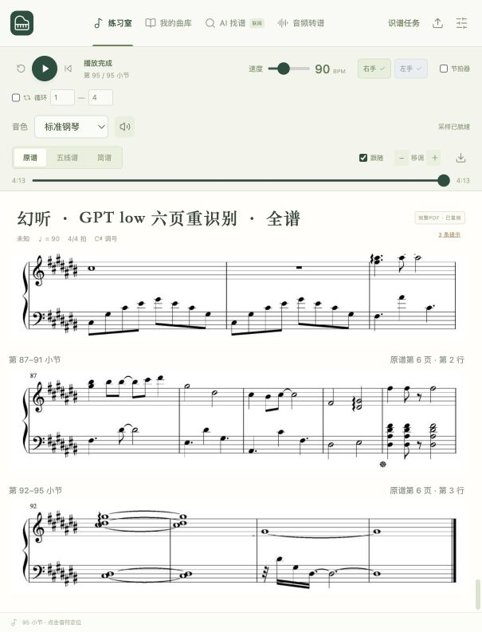
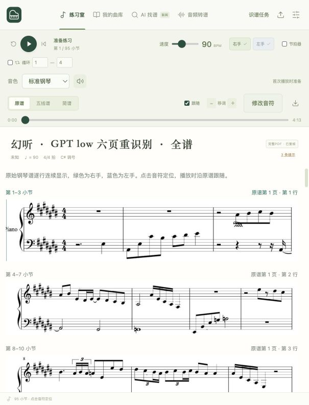

本轮重新读取全部28行，未命中识别结果缓存。人工校对后导入App，95小节、380拍、1068谱面音符、982播放事件。
| 指标 | 本轮 low | 历史 high |
|---|---|---|
| 识别阶段（含重试） | 6分55秒 | 45分4秒 |
| 至App完整验证总耗时 | 14分5秒 | 57分5秒 |
| 校对前严格事件匹配 | 1014/1068 = 94.94% | 1064/1068 = 99.63% |
| 模型请求 | 57 | 60 |
| 已报告tokens | 170,864（输入108031，输出62833） | 至少332,759（另2次用量未知） |
模型成功返回、人工修改前的音符，与已逐音校对原谱基准比较：音高、左右手、起拍、时值均一致才匹配；容差0.0001拍。速度、力度、坐标、休止和延音不包含在此音符匹配率中，另行核对。不是外部盲评金标准。
low需修正11行、54个音符事件；首批末行要求更清晰原图，单行重试后取得结果。两行独立复读未完成，已人工对照原谱处理。high的4个事件差异是倚音借拍约定，并非音高错误。校对后数据不计作模型原始准确率。
比较限制：high为优化前verbose、2行并发；low为优化后compact-v2、4行并发。使用相同六页原谱，但末行采用high恢复后放大图。不是仅改变effort的控制实验；不能将全部提速与节省归因于low。单次歌曲结果不能代表所有琴谱。
额度按模型返回tokens统计；共享ChatGPT/Codex额度百分比包含本对话和其他会话，不能换算为本App精确额度或人民币费用。
完整报告 · 调用明细 · 校对前逐行差异 · 校对记录 · 完整乐谱备份

